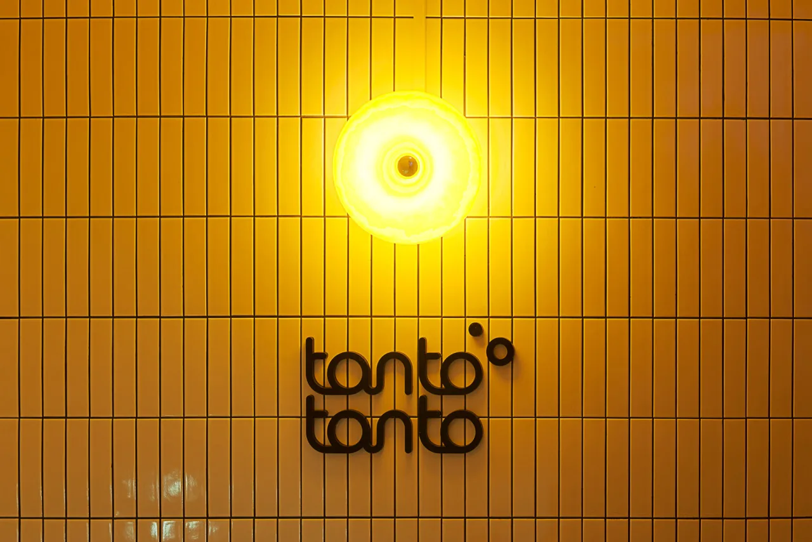

탄토탄토,
건대 비비드 이탈리안
건대입구역 2번 출구에서 걸어서 5분
오늘 11:00–22:00 브레이크타임 15:00–17:00
대표 메뉴전체 메뉴 보기


- 주소
- 서울 광진구 아차산로33길 49, 2층
- 라스트오더
- 점심 14:30, 저녁 20:50
예약
편한 곳을 골라 주세요. 누르면 바로 예약 화면으로 이동해요.
- 전화 예약
- 02-2039-2915
- 오늘 영업
- 11:00–22:00 브레이크타임 15:00–17:00
- 라스트오더
- 점심 14:30, 저녁 20:50
- 인원
- 온라인 예약 최대 6명, 7명 이상은 전화
- 창가 소파
- 예약 요청 사항에 '창가 자리'라고 적어 주세요
자주 묻는 질문
탄토탄토는 어떤 식당인가요?
건대입구역 2번 출구에서 걸어서 5분 거리에 있는 이탈리안 레스토랑이에요.
건대 맛집을 찾는 분들이 파스타와 스테이크를 먹으러 오는 곳이에요.
파스타 15종과 스테이크, 리조또, 샐러드를 한 상에 나눠 먹기 좋아요.
파스타는 14,800원부터 21,800원, 하우스 스테이크는 32,800원이에요.
노란 타일 벽과 노란 소파 창가 자리가 있는 밝은 2층 매장이에요.
탄토탄토는 어디에 있나요?
서울 광진구 아차산로33길 49, 2층이에요.
건대입구역 2번 출구에서 걸어서 5분 걸려요.
큰길을 따라 걷다가 메가MGC커피에서 왼쪽 골목으로 들어오세요.
영업시간과 라스트오더는 어떻게 되나요?
매일 11:00~22:00 영업해요.
- 브레이크타임
- 평일 15:00~17:00, 주말 15:00~16:00
- 라스트오더 평일
- 점심 14:30, 저녁 20:50
- 라스트오더 주말
- 점심 14:50, 저녁 20:50
대표 메뉴와 가격은 어떻게 되나요?
- 채끝스테이크 크림
- 19,800원
- 샥슈카(에그인헬)
- 19,800원
- 명란 알리오올리오
- 15,800원
- 브리&바질 뇨끼
- 18,800원
- 하우스 스테이크
- 32,800원
건대에서 데이트나 기념일에 가기 좋은 식당인가요?
네, 데이트와 기념일, 친구 모임에 잘 어울려요.
주황빛 조명과 노란 소파 창가 자리, 원목 테이블이 있는 밝고 따뜻한 공간이에요.
하이볼과 와인도 있어요.
예약할 수 있나요?
캐치테이블과 네이버에서 예약할 수 있어요.
온라인 예약은 최대 6명까지 가능해요.
전화 예약은 02-2039-2915로 해 주세요.
단체로 가도 되나요?
7명 이상 단체는 매장으로 전화 주시면 안내해 드려요.
전화: 02-2039-2915
창가 소파 자리를 예약할 수 있나요?
네, 창가 소파 좌석은 4개 테이블이고 2~6명이 앉을 수 있어요.
예약할 때 요청 사항에 '창가 자리'라고 적어 주시면 마련해 드려요.
콜키지가 되나요?
와인과 사케는 콜키지 무료예요.
- 와인
- 무료
- 사케
- 무료
- 위스키
- 병당 30,000원
1인 예산은 얼마 정도인가요?
점심과 저녁 가격이 같고, 1인 1만~3만 원대예요.
파스타는 14,800원부터, 하우스 스테이크는 32,800원이에요.
주차할 수 있나요?
전용 주차장은 없고, 가까운 한아름 528주차장(유료)을 이용해 주세요.
- 기본
- 1시간 3,000원
- 추가
- 20분당 1,000원
- 하루 최대
- 50,000원
아이와 함께 가도 되나요?
네, 아이를 환영하는 웰컴키즈존이에요.
아기의자가 있어요.
For visitors
TantoTanto is a vivid Italian restaurant a 5-minute walk from Exit 2 of Konkuk Univ. Station (2F, 49 Achasan-ro 33-gil, Gwangjin-gu, Seoul), with an orange-lit ceiling and a long yellow banquette by the windows.
Signature dishes are Striploin Steak Cream Pasta (19,800 won), Shakshuka (19,800 won), Myeongran Aglio e Olio (15,800 won), Brie & Basil Gnocchi (18,800 won) and House Steak (32,800 won). Open daily 11:00–22:00 with a break 15:00–17:00 on weekdays and 15:00–16:00 on weekends; no regular closing day. Last order: lunch 14:30 on weekdays and 14:50 on weekends, dinner 20:50. Phone +82-2-2039-2915.
Wine and sake are corkage-free (whisky 30,000 won per bottle). Kids are welcome and high chairs are available. Online booking takes up to 6 guests; call for larger groups. There is no private parking; the paid Hanareum 528 lot is nearby.